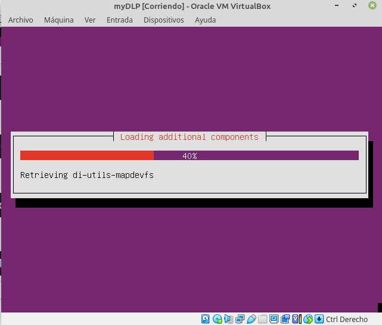

4.1 Implementación del MyDLP en un sistema
1. Tipos de implementación de MyDLP
Hay dos maneras de implementar una herramienta DLP:
- Una de ellas es el modo span, este es un sniffer en modo promiscuo que revisa el tráfico que pasa por la red.
- El otro modo es inline, donde todo el tráfico pasa de forma física por la herramienta DLP; a diferencia del modo span que sólo detecta, pero no bloquea la pérdida de información, el modo inline por su implementación este será capaz de detener y bloquear la fuga de información.
Figura 1. Modos de implementación.
2. Objetivo de la propuesta de implementación
En este capítulo, se diseña una propuesta para implementar una herramienta Data Loss Prevention (DLP), siendo esta un mecanismo para la detección, supervisión y protección de la información sensible donde quiera que esta se almacene o se utilice. Actualmente la organización ciber.local no cuenta con un mecanismo similar, por lo que están expuestos a acciones tan sencillas como que algún empleado copie datos confidenciales en un pen drive o similar. Se expone una propuesta que se plantea para prevenir la fuga de datos en la organización; entre las principales bondades del sistema se pueden describir:
- Prevenir la fuga o pérdida de activos de información; especialmente datos privilegiados.
- Datos sensible en el tramo final de la red; aún si los usuarios no están conectados en una red corporativa.
- Nos decantamos por una herramienta de software libre más robusta que existen actualmente en el mercado.
Recordamos que los DLP son aquellas tecnologías o herramientas que tienen como función prevenir la pérdida de datos basados en la inspección de contenidos con un análisis textual de los datos.
Ejemplo: en reposo, datos en la nube, datos en movimiento en la red y en dispositivos (Gartner, 2017). También, Reed (2017) señala que los productos DLP integrados ofrecen un conjunto de características como son: pasarelas web, pasarelas de correo electrónico, firewalls de redes, IDS, cifrado de correos electrónicos, gestión de contenidos, herramientas de clasificación de datos, herramientas de descubrimiento de datos y agentes de seguridad de acceso en la nube.
3. Diseño de las políticas de seguridad
Según Castrillón & Lezcano (2013), las políticas se deberían establecer en la herramienta Data Loss Prevención (DLP) para realizar una correcta detección del movimiento de la información confidencial en las instituciones.
En nuestro contexto las política serán:
- Políticas para web: este tipo de políticas se encargan de monitorizar el tráfico en la web para determinar la información que viaja por esos protocolos.
- Políticas para correos electrónicos: Este tipo de políticas trabajan sobre los protocolos POP3, SMTP e IMAP para ver qué información cruza por dichos protocolos.
- Políticas de almacenamiento extraíbles: Este tipo de políticas trabaja sobre los datos que son transferidos a los dispositivos extraíbles como USB y discos duros.
- Políticas de almacenamiento cifrado: Este tipo de políticas trabajan sobre los datos cifrados que son transferidos a los dispositivos extraíbles como USB y discos duros.
- Políticas de almacenamiento en entradas extraíbles: Este tipo de políticas se utilizan para el control de la información que es copiada a dispositivos extraíbles.
- Políticas de impresoras: Este tipo de políticas controlan que la información no sea impresa sin la autorización correspondiente.
- Políticas para captura de pantallas: Este tipo de políticas controlan el uso de las capturas de pantalla cuando se esté usando con alguna información sensible en primer plano.
- Política API: Esta regla es una característica única de la herramienta MyDLP.
Figura 2. Diseño de políticas.
4. Reglas generales para la implementación en el DLP
Par el contexto de estudio, se hace necesario seguir ciertas reglas establecidas para el mismo. A continuación, se describen:
- Restringir el uso de equipos y medios de almacenamiento no autorizados por la institución.
- Generar y almacenar la información de la institución en los equipos que están debidamente autorizados.
- No guardar información ajena a la institución en los equipos y medios de almacenamiento pertenecientes a la misma.
- El correo electrónico debe ser utilizado para uso exclusivo de trabajo de la organización.
- Determinar la información sensible de la organización por cada departamento o custodio de la misma.
- Bloquear y notificar la transferencia en archivos adjuntos que contenga información sensible por correo electrónico.
- Bloquear y notificar la transferencia en archivos adjuntos comprimidos que contengan información sensible por correo electrónico.
- Bloquear y notificar la transferencia de información sensible que esté en el cuerpo del mensaje del correo electrónico.
- Bloquear y notificar la transferencia de fragmentos de información sensible en el cuerpo del mensaje del correo electrónico.
- Bloquear y notificar la transferencia de fragmentos de información sensible que contenga la cabecera del mensaje en correo electrónico.
- Bloquear y notificar la transferencia de información sensible por medios de almacenamiento extraíbles como DVD, CD, HDD, USB entre otros.
- Bloquear y notificar la transferencia de fragmentos de información sensible por medios de almacenamiento extraíbles como DVD, CD, HDD, USB, entre otros.
- Bloquear y notificar la transferencia de información sensible por medios de protocolos: HTTPS, FTP, NFS, etcétera.
- Bloquear y notificar la transferencia de fragmentos de información sensible por medios de protocolos: HTTPS, FTP, NFS, etcétera.
- Bloquear y notificar la transferencia de información sensible por medio de mensajería instantánea como Teams, Skype, Google Talk, Webex, Zoom, etcétera.
- Configurar para que el generador y su grupo de trabajo puedan leer la información de carácter sensible.
- Bloquear y notificar la transferencia de información sensible por VPN en la red.
- Bloquear y notificar la impresión de información sensible.
- Bloquear y notificar la captura de pantalla de la información sensible.
- Restringir que la información sensible generada en la organización sea cifrada.
- Almacenar y conservar los eventos (logs) para futuros análisis forenses.
- Restringir la instalación y desinstalación de los agentes de control de los equipos informáticos de la institución.
- Definir los perfiles de cada usuario y su área de trabajo para cada empleado, estableciendo permiso y restricciones de actividades.
5. Componentes de MyDLP
Consta de tres componentes:
- MyDLP Network Server, este funciona como el centro de administración de la herramienta, su instalación se realiza de preferencia en la distribución Ubuntu/Linux.
- MyDLP Endopoint, es el agente de control el que permite detectar y evitar que la información de las organizaciones sea trasladada en cualquier medio existente, se encarga del cumplimiento de las políticas implementadas para erradicar la fuga de información.
- MyDLP Web UI, desde este aplicativo web se configura las políticas, agentes de control y todo el proceso para erradicar la fuga de información.
6. Instalación
6.1 Requisitos
| Requisitos | Servidor | Cliente |
| Procesador | Core i5 3GHz 64 bits | Core i3 1,6GHz |
| Memoria RAM | 8GB | 2GB |
| Sistema operativo | Ubuntu | Linux, Windows y Mac |
| Almacenamiento | 256GB o más | 50GB |
| Red | 100/1000 Mb/s | 10/100/1000 Mb/s |
Para la instalación de la herramienta MyDLP se puede descargar la ISO desde la página oficial.
1. Arrancar iso
Creamos una nueva máquina virtual con los requisitos del servidor y arrancamos la ISO descargada.
2. Selección de idioma
Se escoge el idioma español.
 |
3. Carga de componentes
A continuación comienza la carga de componentes.

4. Creación de usuarios
A continuación, se añade el usuario usado en el aplicativo web y la cuenta.
5. Creación de contraseña
El siguiente paso es añadir la contraseña del usuario. Si el password no cumple con los requisitos de complejidad (contener 8 caracteres y pueden ser mayúsculas, minúsculas y símbolos especiales) nos avisará.
6. Configuración de cifrado
En la siguiente pantalla, nos pregunta si se desea cifrar el directorio home. Para este caso de ejemplo, no se cifra.
7. Zona
En la siguiente pantalla, nos pregunta si la zona es correcta, para este caso, es Europa/Madrid.
8. Particionado
En la siguiente pantalla, nos pregunta por el particionado. En este apartado se podrá crear un volumen VLM si se desea y particionar como se desee.
9. Comienzo de instalación
A continuación, comienza el proceso de instalación.
10. Configuración de SMTP
En la siguiente pantalla, nos pregunta la configuración del servicio smtp. Par este caso de ejemplo, se selecciona 'Internet site' ya que no se dispone de un servicio propio de correo electrónico instalado sino que se utilizan servicios en la nube.
11.
Escriba su contenido...
7. Configuración
Para realizar la configuración inicial de MyDlp hay que abrir una terminal y ejecutar el siguiente comando par modificar el fichero interfaces y configurar el tcp/ip.
root@mydlp:/# nano /etc/network/interfaces
Para este escenario, la red de la organización es la 192.168.1.0/24, por lo que estableceremos una ip estática en esa subred. La configuración es la siguiente:
iface enss3 intec estatic
Address 192.168.0.253
Netmask 255.255.255.0
Network 192.168.1.0
Broadcast 192.168.1.255
Gateway 192.168.1.1
A continuación se procede a reiniciar el servicio de red con el siguiente comando:
root@mydlp:/# /etc/init.d/network restart
El acceso al servidor se realiza desde un equipo cliente de la red usando un navegador web en la siguiente url: 192.168.0.253:3128 para establecer la configuración.
8. Instalación de Endpoint MyDLP
Una vez instalado myDLP, habría que instalar los agentes de MyDLP en los puntos finales de la red o en los tramos fuera de la misma que se desea monitorizar y tener el control de la información que viaja a través de esta.
Obra publicada con Licencia Creative Commons Reconocimiento No comercial Compartir igual 4.0